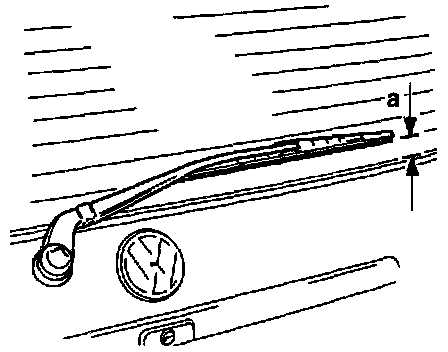

Operation CHARM
: Car repair manuals for everyone.
Home
>>
Volkswagen
>>
1997
>>
GTI (1H1) V6-2.8L (AAA)
>>
Repair and Diagnosis
>>
Wiper and Washer Systems
>>
Wiper Blade
>>
Adjustments
>>
Rear Wiper(s) Park Position
Rear Wiper(s) Park Position

-
Run
wiper motor
to stop.
-
Adjust end of
wiper arm
to position -a-.
a =
25 mm (1 in.)